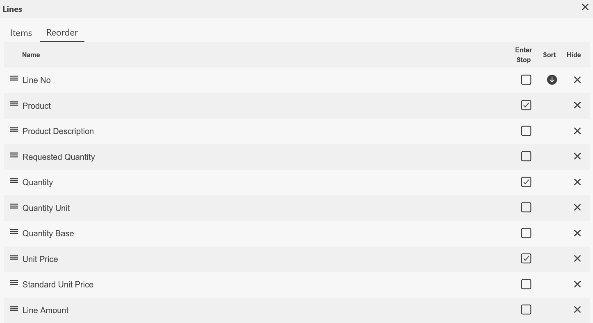

Quick Navigation with the Enter Key
As a frequent user of ERP.net platform, you probably already use the ERP.net Windows Desktop Client keyboard shortcuts that help you save time and clicks. Apart from these common shortcuts, you can further minimize repetitive clicks and boost your productivity when working with more complex workflows or filling out form data fields. Without touching your mouse, you can simply hit the Enter key and jump straight to the next important data entry.
You can define which form fields can be navigated to with the Enter key, so that upon a keystroke, only these fields get highlighted to be edited. These are called Enter stops. You can also use Enter stops to quickly navigate not only to fields and lines but also to whole panels. Of course, all other fields and panels are still visible and editable. Thus, users, roles within the company, or the whole company, for that matter, can streamline processes, based on task or form specifics.

For example, when you enter a new sales order, the form may contain lots of fields that may not be relevant to your role or to the task at hand. Usually you just need to enter details about the product ordered, its price and required quantity. Thus, to save your time and avoid clicking through every single field or panel of the form, you select as Enter stops only the fields and panels applicable to your current workflow and context, so that you can quickly navigate to them, skipping all the rest.